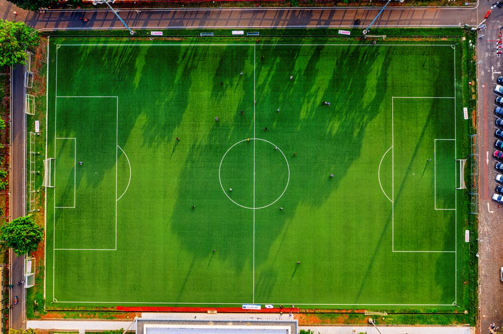
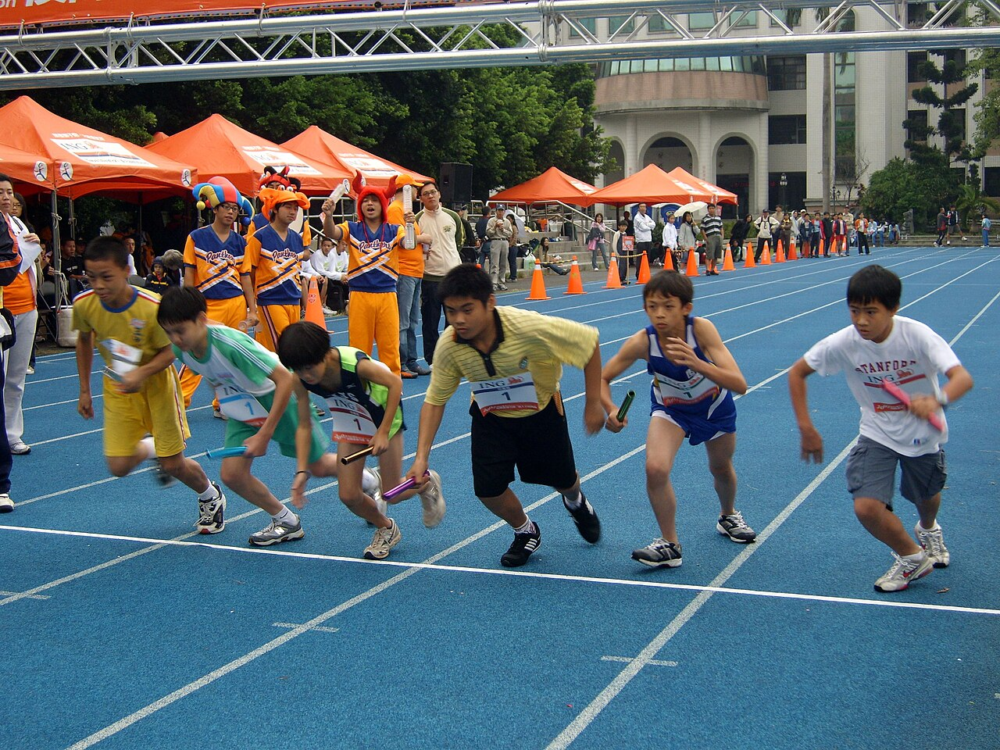

「うちの子に合うクラブを見つけたい」。
その気持ちに、ちゃんと寄り添える場所を作りたい。
スポーツが育てるのは、運動能力だけじゃありません。
仲間との関わり、挑戦する心、
うまくいかない日の悔しさ、できた瞬間の笑顔。
そして、自分らしさ。
それを大切にしてくれるクラブとの出会いを、
もっと届けたい。
近所のいいクラブが、
知られていないのはもったいない。

子どもにとって、からだを動かすことは、成長の大切なきっかけのひとつです。
「この時期に、どんな運動をするか」が、その子の未来にどれだけ大きいか。
だからこそ、子どもが自分に合った運動と出会えることは、とても大切だと考えています。
けれど、いざ探そうとすると情報は散らばっていて、
近所にいいクラブがあるのに、届いていない。
クラブの側も、伝え方に困っている。
その「もったいなさ」をなくしたくて、チビスポを始めました。
誰にでも良いクラブは、ありません。だから紹介では「合う子」と「合わない子」を並べて書きます。褒めるだけの紹介は、選ぶ助けになりません。
月謝は目安として載せます。でも、クラブの価値は金額では決まりません。コーチの声のかけ方、続けている子の顔ぶれ、練習の空気。その子が続けられるかどうかを決めるものを、いちばん大きく出します。
コーチの声のかけ方、練習前のざわめき、子どもたちの表情。文字では伝わらない空気感を、写真と動画でそのまま届けます。見に行く前に、少しだけ感じられるように。
撮影、コンディショニング、栄養、道具。子どものスポーツは、地域の企業と一緒に支えられています。クラブは基本無料で載せられ、企業も同じ場所で関われる。地域のスポーツを、みんなで盛り上げていく仕組みです。
保護者は、うちの子に合うクラブと出会う。クラブは、想いをそのまま伝えて、来てほしい子に届ける。地域の企業は、撮影・コンディショニング・栄養・道具と、それぞれの得意なことで子どものスポーツを支える。
三つの輪がゆるやかに重なる、そのまんなかに子どもがいる。それがチビスポの形です。
チビスポは、からだの動きに毎日向き合っている理学療法士が、子どもの成長を手助けしたくて始めた、小さな場所です。
専門知識は、押しつけるためのものではありません。保護者が安心して一歩を踏み出せるように。現場感とエビデンスの両方を、やさしい言葉でお届けしていきます。
「探せない」「伝わらない」「分からない」を、このサービスで解決していきます。
クラブの方へ。あなたの練習の空気は、文章より雄弁です。まずは一枚の写真から、載せてみてください。

クラブ・保護者・地域の企業がゆるやかにつながり、
子どもたちが「やってみたい」に出会える場所を、
地域ごとに広げていきます。